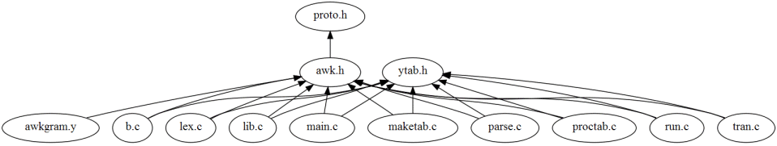
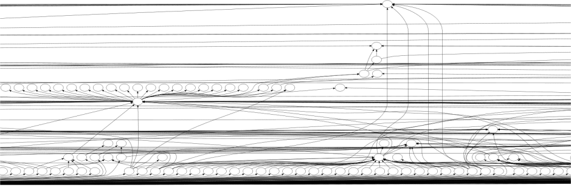
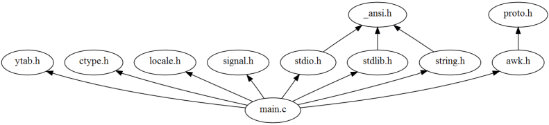
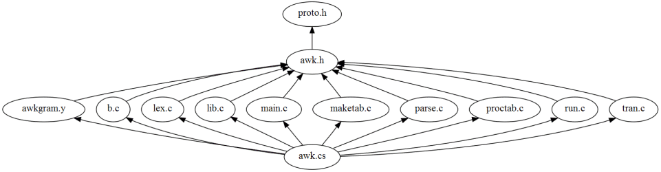

Last change: Friday, September 19, 2008 8:16 pm
Last change: Friday, September 19, 2008 8:16 pm
Unless otherwise expressly stated, all original material on this page created by Diomidis Spinellis is licensed under a Creative Commons Attribution-Share Alike 3.0 Greece License.
Two global options specify the format of the include graph and the content on each graph's node. Through these options you can obtain graphs in
including file -> included file
Two links on the main page
(file include graph - writable files and
file include graph - all files)
can give you the include graphs of the complete program.
For programs larger than a hundred thousand lines,
these graphs are only useful in their textual form.
In their graphical form, even with node information disabled,
they can only serve to give you a rough idea of how the program is
structured.
The following image depicts how writable (non-system) files are
included in the awk source code.

and the following is a part of the include file structure of the
Windows Research Kernel

More useful are typically the include graphs that can be generated for individual files. These can allow you to see what paths can possibly lead to the inclusion of a given file (include graph of all including files) or what files a given file includes (include graph of all included files). (call graph of all callers), which functions can be reached starting from a given function, and how functions in a given file relate to each other.
As an example, the following diagram depicts all files that
main.c includes

while the following diagrams shows all the files including
(directly or indirectly)
proto.h.

| Contents | « Previous Next (C Namespaces) » |
Last change: Friday, September 19, 2008 8:16 pm
Unless otherwise expressly stated, all original material on this page
created by Diomidis Spinellis is licensed under a
Creative Commons Attribution-Share Alike 3.0 Greece License.